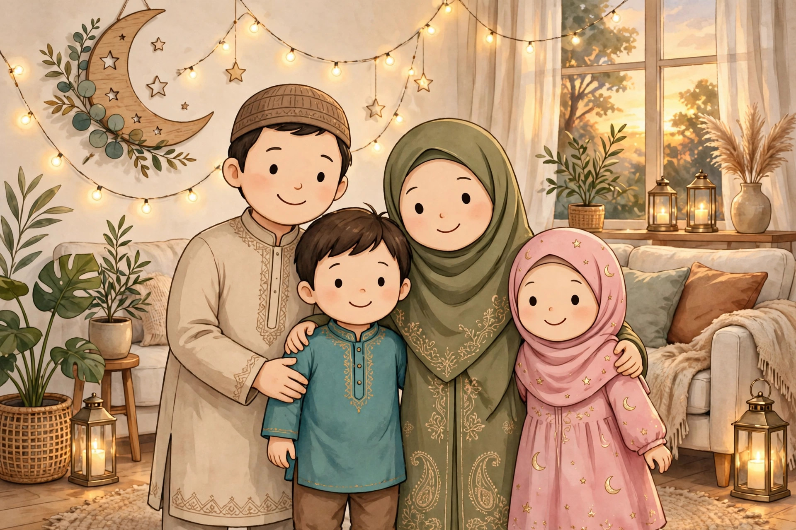

Family and Baby PromptsNewEid Family Photo Prompts: 10 Warm Ideas for 2026
Eid photos at my house are always chaos, someone blinking, someone fixing their dupatta, so I tested these on a family lunch photo from last Eid. The fairy lights one is the one my mum asked me to print.
Muhammad Afaq · 2026-11-18Read